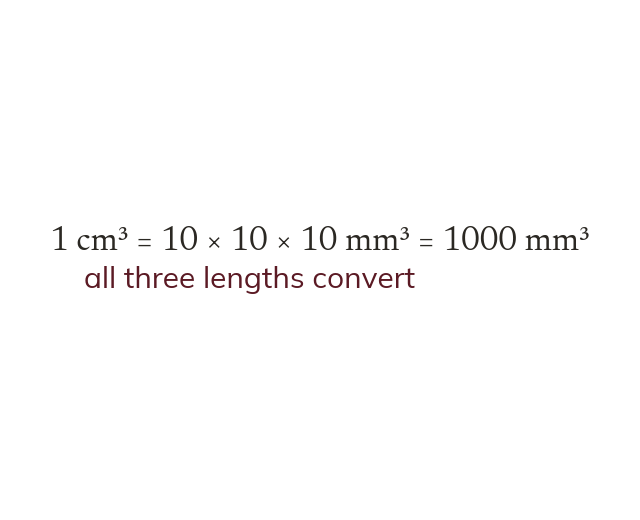

A volume unit converts by the cube of the factor
Converting lengths by converts volumes by
All three dimensions convert, not just one.
Converting a length unit by a factor of converts the volume it makes by because all three dimensions are converted, not just one.